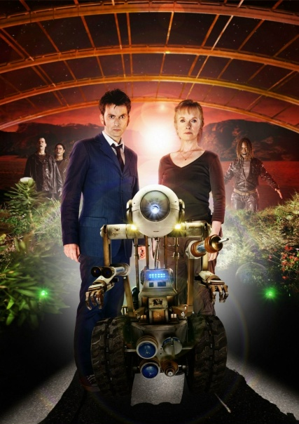

Эра Десятого Доктора
<<< НАЗАД ||| Воды Марса ||| ДАЛЬШЕ >>>
или
<<< НАЗАД к спин-офф сериалу Приключения Сары Джейн
<<< НАЗАД к спин-офф сериалу Торчвуд
MVO [TVShows] 2.0 + 5.1 / MVO [Кириллица] Sci-Fi
MVO + DVO + VO [Baibako] / MVO [BeeFilm]
+ Original [ENG]
Субтитры: Русские {TrueTransLate} и Английские

The Waters of Mars
осенний спецвыпуск
15 ноября 2009
Формат: 60-минутный эпизод
| Варианты озвучек: | * Разные: смотрите по инструкции чаще всего это 16-я серия четвертого сезона |
|---|---|
| Скачивание и просмотр: |
Марс, 2059 год. База Боуи Один. Последнее записанное сообщение. «Не пейте воду. Даже не трогайте её. Ни капли.»

